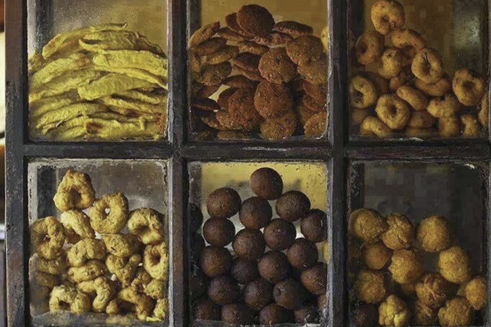
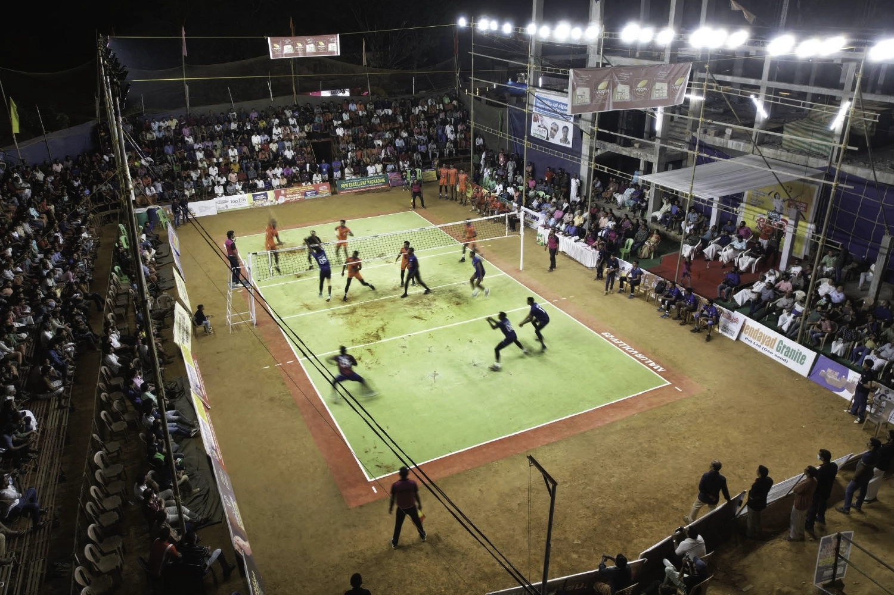
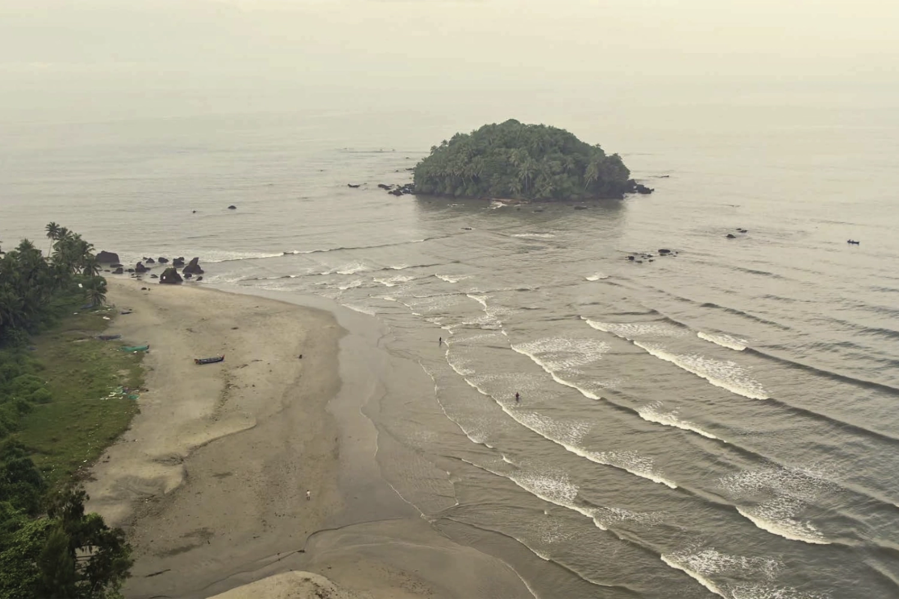
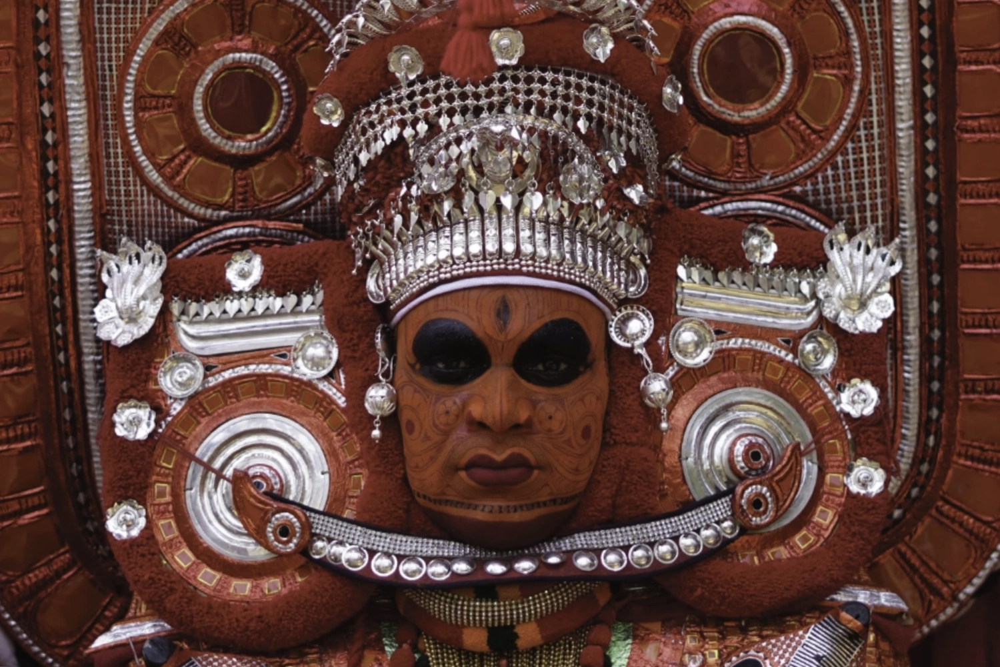
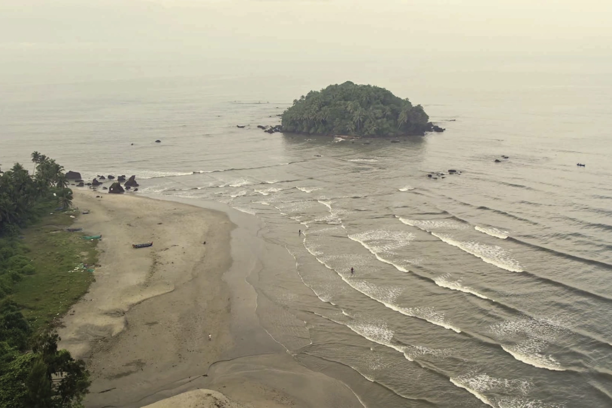
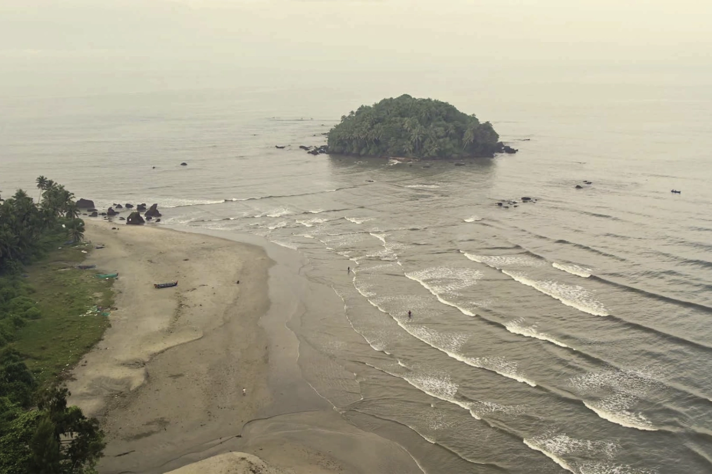

A pioneer in alternative architecture and development, GoodEarth has
been building many residential communities sensitive to the environment and the people for more than 35 years.
Enhancing quality of living through holistic design thinking, nurturing ecosystems and biodiversity, thus,
creating vibrant and sustainable communities has been its driving force. Now, with more than three decades of
experience in building communities, GoodEarth is heralding a new chapter in regenerative development through
its efforts in ecological restoration and regenerative agriculture.
Overview
GoodEarth Saarang
Saarang is GoodEarth’s first holistic eco-village in Kannur district,
Kerala. A holistic eco-village, Saarang, offers the right environment for people to live, work, play, explore,
education and wellness; a diverse multi-generational community where elders are taken care of, children play
with unbridled joy, and adults work in a pristine environment and interact.
25
minutes
From Kannur Airport
5
hours
From Bangalore via Mysore road
1
hour
From Kannur city
Explore GoodEarth Saarang, where a once rubber plantation is slowly
being transformed into a vibrant food forest. Unravel how GoodEarth is trying to reverse climate change through
regenerative agriculture and holistic community living.
Discover Saarang, watch video!
A holistic eco-village
Nestled in the foothills of Puralimala, Western Ghats, Saarang is a biodiversity hotspot. With all the
comforts, it’s well connected and abundant with clean water, fresh air, fertile soil and organic food.
A
regenerative food forest
GoodEarth’s regenerative food forest that runs along Saarang was once a monocrop rubber plantation. It’s now
slowly healing and envisioned as a training centre in regenerative agriculture.
Architecture &
landscaping
Saarang’s masterplan is a nature-inspired symphony, balancing built and unbuilt elements, shaping a unique
landscape that enhances human experiences.
Life
at Saarang
Away from the city’s din live your life at the pace you like at Saarang. Travel often with quick access to
airport, work remotely, swim, drive to the beaches, gaze at the stars all in a day!
SAARANG
Residential Community
Spread across 27 acres, Saarang comprises
communities on 15 acres and a regenerative food
forest on 12 acres, business centre with co-working spaces coupled with conference halls and sports club.
Playground and performance spaces are visualised as common spaces of interaction both within the community and the
neighbourhood.
Embark on a virtual journey
through Saarang’s 3D walkthrough, a vivid preview of our vibrant community and its promising future. Immerse
yourself in the rich tapestry of landscapes
and architecture, showcasing an extraordinary living experience at GoodEarth Saarang.
Disclaimer: This is a
computer-generated walkthrough for reference
purposes only and does not represent an actual video of Saarang project.
SAARANG
Neighborhoods
Nearby
Rivers & beaches
Wildlife
Vibrant culture
Education
Medical care
Bustling
town & 50 shades of life
Take a walk in the neighbourhood leading to the bustling towns, travel to the villages nearby, board a local bus;
catch a glimpse of the community pond where children and the youth dive deep cutting through the aquamarine water
like pros. Feel the rains, an indispensable part of life here. Indulge your desire;
treat yourself to an array of lip-smacking cakes, confectionaries…join the youths in sports for it’s the opium of
the masses here.


River,
beaches & drives
Converse and explore the nature around. With River Baveli that carries the spirit of the Western Ghats in the
neighbourhood
and beaches an hour’s drive, strike a conversation with the nature around and open up your heart to the beauty.
Drive through and enter magical landscapes.

Aralam
Wildlife Sanctuary
A mere half hour drive from Saarang is Aralam Wildlife Sanctuary. Located on the western slopes of the Western
Ghats, and adjoining forests of Brahmagiri Hills of Kodagu, Karnataka, Thirunelli Hills of Wayanad, and nourished
by the River Cheenkanni, Aralam Wildlife Sanctuary is a rich and safe haven to a myriad variety of flora and
fauna: 263 species of butterflies, 98 dragonflies and
damselflies, 45 fishes, 41 amphibians, 63 reptiles, 241 birds, 54 mammals and 1,009 varieties of plants.
Experience nature up close.
Theyyam
& Kalaripayattu
Experience the rich and vibrant culture of the region where people live harmoniously and the secular fabric is
strong. Witness the ritual art form Theyyam, predominantly performed in the north Malabar region of Kerala,
especially Kannur. A visual splendour, wherein man adorns the guise of gods, goddesses and spirits of ancestors
and pays obeisance to them through spirited dance,
music and mime. Take a step, wield a sword and know Kalaripayattu, the traditional Indian martial art form, first
hand.

Education
Kerala holds the best record for providing quality education to students across the nation, to this day. With
Kerala
continuing to be the most educated state in India, a number of schools adhering to various syllabi are located
around Saarang
Medical
care
With a buoyant daily life grounded in secular values, Kerala’s performance in both health and education continues
to be par excellent in the country. Moreover, in a place such as Saarang where there is quality air,
water and food, the diseases are kept at bay. However, Saarang is well connected to both health care centres and
hospitals.
CONTACT US
Get in touch with us
Have any question?
Call us +91 77956
88033
Images courtesy: GoodEarth Communities | Computer generated images, walkthroughs and render
images are for representational purposes and are indicative of the actual designs.


.webp) 
